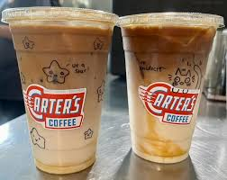

Purpose
Welcome to my Fort Worth guide! This project highlights some of my favorite local coffee shops, restaurants, and places to visit around the city. My goal is to create one big review and travel guide that feels helpful, personal, and easy to explore.
Coffee Spots
Favorite Coffee Shop
Carters coffee is the overall champ!
My personal favorites: Iced Cinnamon Latte with Honey, Iced Blueberry Latte (Seasonal), Arnold Palmer (for my non-coffee drinkers). And if you're looking for a good bite to pair with your drink I reccomend the Breakfast Burrito!

Fort Worth Eats
Top 3 Favorite Resteraunts
Locals Guide
Coffee Map
Mapbox coffee map will be added here.
Food Map
Mapbox food map will be added here.